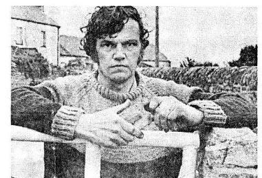
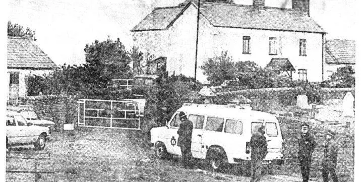
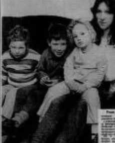

Deaths
On the 23rd instant, at Llandough, near Cardiff, Amy, relict of the late Mr. John Williams, Great House farm, aged 65 years.
Source
Cardiff Times, 30 December 1864, death notice. Legal Wiki EV-0246.
A reconstruction: these outlets’ real articles shown as if posted online. Not their own accounts.
The story as the papers told it, 1864–1995: 53 posts from 13 pages. Tap a name for the profile, tap “Source” for the original.
On the 23rd instant, at Llandough, near Cardiff, Amy, relict of the late Mr. John Williams, Great House farm, aged 65 years.
Cardiff Times, 30 December 1864, death notice. Legal Wiki EV-0246.
WILLIAMS.—Dec. 23, at Llandough, near Cardiff, Amy relict of the late Mr. John Williams, Great House farm, aged 65.
Cardiff and Merthyr Guardian, 30 December 1864, death notice. Legal Wiki EV-0246.
Robert Williams, a mason’s labourer, was on Tuesday charged (before Mr. John Duncan and Mr. J. S. Corbett) at the offices of the clerk to the Penarth magistrates, High-street, Cardiff, with stealing three geese, the property of Mr. John Williams, Great House Farm, Llandough, on November 11, 1891.—Sergeant Ferris, of the Cardiff Borough Police Force, deposed that he saw the prisoner early on the morning in question in Clive-street, Grangetown, carrying the geese on his back. He at once started after Williams, who dropped the geese and got away.—Police-constable Morgan, of the county constabulary, said he arrested the prisoner when he was leaving Cardiff Gaol on Monday. The prisoner, when charged with stealing the geese, replied, “All right.”—The prisoner was remanded until Monday at Penarth.
Unidentified Cardiff/Penarth newspaper, November 1891 (British Newspaper Archive clipping). Legal Wiki EV-0010 · GHF-E090-N01.
Words in [square brackets] are the archive’s: neutral words in place of the original’s, or gaps filled. Quotes from named people appear as their comments, word for word.
… the property of Mr. John Williams, Great House Farm, Llandough, on November 11, 1891 …
South Wales Star, 10 June 1892. Legal Wiki EV-0226 (only these words are quoted in our catalogue).
Swine fever has broken out at Llandough and Rhoose this week. Five pigs belonging to Mr Williams, Great House, have been slaughtered. On Tuesday morning, one of a herd of 23 was reported as being affected, and it was feared that the whole would have to be slaughtered.
Barry Dock News, 3 August 1894 (the Glamorgan Gazette gives the herd as 22). Legal Wiki EV-0247.
The postal authorities of the country have evidently faith in the possibilities of the Marconi system of telegraphing without wires, and the Italian inventor (M. Marconi) has reason to feel proud of the success of the demonstrations, so far as they have yet been carried out. M. Marconi, as was reported the other day, successfully carried out on Salisbury Plain a series of experiments with a couple of balloons attached by wires to the ground.
For several days past he has been engaged in conducting experiments at Lavernock Point, near Cardiff, in testing the effective working of his system of telegraphing without wires between the mainland and the Flat Holm, and the trials have been witnessed by Mr. Preece, engineer-in-chief of the General Post Office; Mr. Gavey (late of Cardiff), now second engineer in London; Mr. Fardo, Cardiff postmaster, and other officials of the department.
For the purposes of the experiments, Mr. Williams (of the engineering department, Cardiff) fixed upon Lavernock Point a pole 120 feet high, with a zinc cylinder at the summit, 5ft. 6in. by 4ft., insulated from the Flat Holm and Brean Down. The experiments on Tuesday were not so successful as might have been desired, but on Wednesday and Thursday the results were most satisfactory. On Friday afternoon there was a semi-public demonstration, when the system was explained in miniature, a transmitter facing a receiver at a distance of some twenty yards.
Evening Express, 15 May 1897 (cutting in the family archive). Legal Wiki EV-0011, EV-0248 · GHF-E090-N02.
Welsh Newspapers Online · EV-0011 · EV-0248
Archive note: Context: the “Mr. Williams” named is of the Post Office engineering department, Cardiff. The article does not mention Great House Farm.
Amongst the Marquis of Bute’s guests at the rent audit dinner at Cardiff on Saturday was Mr John Williams, of Llandough Farm … He succeeded his father in the tenancy of the farm in 1855 … Saturday was his 102nd rent audit.
Cardiff Times, 16 July 1904, p.1. Legal Wiki EV-0227 (the paper names “Llandough Farm”).
The annual court leet and court baron of the lordship of Bute was held on Thursday week last at the Merry Harriers Hotel, Llandough … A vote of sympathy was passed with the family of the late Mr. John Williams, Great House, Llandough, for many years a juror of the court. In accordance with historic tradition, the presentments were signed by the deputy steward and jury.
The wedding took place at Llandough Church of Mr. Fred Buckler, of Barry, and Miss Mary Doreen (Nancy) Williams, of Great House Farm, Llandough.
Western Mail, 5 August 1936. British Newspaper Archive search-result text only; page image not yet seen. Legal Wiki EV-0230.
Leckwith Woods … “bought … for a nominal sum in 1942” … “outside the boundary” …
Western Mail, 18 March and 28 October 1955. British Newspaper Archive search-result text only. Legal Wiki EV-0259.
… “Mrs.” M. D. BUCKLER. … Llandough. …
Western Mail, 9 October 1957, p.6. British Newspaper Archive search-result text only. Legal Wiki EV-0242.
Archive note: Only the name and place are read so far; the rest of the item has not been seen.
Mrs. Mary Doreen Buckler, of Great House Farm, Llandough, said she did not oppose the proposal so long as it applied only to playing fields. About 130 years ago Lord Bute allowed her family “a slice of land” which was now Leckwith Common.
Western Mail, 7 May 1958, p.7 (Leckwith Common inquiry, 6 May 1958). British Newspaper Archive search-result text. Legal Wiki EV-0035.
Mrs. M D. Buckler was objecting to further industrial development in the vicinity of her farm, Ty Mawr, Penarth Road, Llandough. Land farmed by her family since 1667 had been “wrongfully appropriated.”
Mrs. Buckler [stated] that the water was cut off from her house and grounds for nearly 10 years by order of Western Ground Rents.
[Herd loss] This, she added, resulted in loss of a complete herd of Friesian cattle.
Western Mail, Thursday 20 November 1958, p.7 (Glamorgan County Council planning committee, 19 November 1958). British Newspaper Archive search-result text. Legal Wiki EV-0037.
Archive note: Read from search-result text only; the page image has not been seen. Her second comment breaks off where the snippet ends.
Words in [square brackets] are the archive’s: neutral words in place of the original’s, or gaps filled. Quotes from named people appear as their comments, word for word.
This is a Welsh case of Crichel Down.
The Glamorgan County Council, Penarth Urban and Cardiff Rural Councils and Western Ground Rents have walked …
By Godfrey Francis
HUNDREDS of people yesterday flocked to see an 800-year-old house, containing centuries-old furniture and china, which is in danger of being demolished by developers.
The ten-roomed house, with magnificent oak beams and glorious views, at Llandough near Cardiff, was opened to the public by Mrs Mary Williams, 60, “to show what the nation is losing.”
Mrs Williams, a widow whose family first acquired Ty Mawr (Great House) in about 1667, lives there with her son, daughter, son-in-law and two grandsons.
Plans to develop the land and demolish the house have angered local historical societies and about 1,000 people have signed a petition of protest.
Ty Mawr is believed to have once been the dormitory home of 12 monks from a Celtic monastery nearby. Its history has never been adequately chronicled but a theory that it was originally a coaching house near a castle was supported by the discovery beneath the dining room floor in about 1870 of the remains of a soldier in armour, his horse, a lance and shield.
The Daily Telegraph, 16 April 1974 (cutting annotated “D. Telegraph 16 April 74”; compare RCAHMW NMR 6048944). Legal Wiki EV-0048 · GHF-E090-N03.
Words in [square brackets] are the archive’s: neutral words in place of the original’s, or gaps filled. Quotes from named people appear as their comments, word for word.
Planning permission to develop the land and build about 13 houses was given to B P Petroleum Pension Trust by the former Glamorgan County Council. But I will refuse to move because not only is this my home it is part of the nation’s heritage.
The ownership of the house has been in dispute for 25 years but my family has lived here for more than 400 years and my solicitors tell me I have a valid claim to it.
From William Rees, Penarth
SIR,—The proposal for the ultimate demolition of the Great House Farm, Llandough, would unwittingly erase from memory one of the early historical sites of Glamorgan, marking, as it does, the location of the ancient Celtic monastery, a centre of first importance in the rise of Christianity in Morgannwg, comparable, indeed, in early record with the two other great Celtic monasteries of St. Cadoc at Llancarfan and of St. Illtyd at Llantwit Major.
It may be difficult for us today to envisage this one-time monastic centre of St. Dochwy, or Docunnus, in its heyday as a great collegiate institution, with its abbots — some of whose names are fully authenticated — presiding over a large community of disciples, the whole serving as an important missionising centre for the early Christianisation of our region.
This missionary movement was to continue until the Norman conquest of Glamorgan, when the monastery with its lands, church dues and other of its property was vested by the Lord of Glamorgan in the Benedictine Abbey of Tewkesbury, the church services thereafter being conducted, within the Romanised order, as the Church of the Parish of Llandough, its revenues being regularly collected for transmission to the abbey.
Llandough remained appropriated to Tewkesbury until the abbey itself, with all its property, fell into the hands of the Crown at the Dissolution of the Monasteries by Henry VIII in the years 1536-39. The site at Llandough, thus secularised, was sold in 1545 to Sir George Herbert, of Swansea, to form the Manor of Llandough, to remain in the possession of the Herbert family until purchased in 1793 by Lord Bute, the farmstead of Great House, or Ty Mawr, which still embodies some of its earlier features, serving as the manorhouse of Llandough.
The entire site, therefore, and the church adjoining, with its ancient Celtic cross still in situ, the sole relic of the ancient monastery, enshrines one of the most interesting of the religious sites of early Morgannwg. Its passing would imply the abandonment of another of the early monuments of Wales, signifying a grievous loss to the tradition of our Welsh heritage.
WILLIAM REES. Penarth.
Western Mail, letters, 19 November 1974 or 1977 (annotated “WM 19/11/7?”). Legal Wiki EV-0051 · GHF-E090-N04.
Archive note: The cutting is annotated “WM 19/11/7?”; the last digit could be a 4 or a 7.
[…] Following the business of the meeting, members were given a fascinating talk by Mr. Henry Owen-John, the assistant director of the Glamorgan/Gwent Archaeological Trust. The subject of his lecture, which was illustrated by numerous slides, was the work of the Trust and some of their recent archaeological ‘digs’ in Glamorgan, notably the excavations at Llandough near Cardiff, where the substantial remains of a Roman Villa and part of a later medieval house were discovered.
In his vote of thanks, Mr. Leslie Evans expressed his and the Society’s admiration of the tireless efforts and valuable work of the Glamorgan/Gwent Trust in recording threatened sites and their rescue archaeology in the face of modern developments.
Neath Guardian, 17 April 1980, p.13. Legal Wiki EV-0055 · GHF-E090-N05.
Archive note: The Llandough excavation described is the Roman villa site south of the church, a separate site from the farm.
Mr. Edward Rowlands (Merthyr Tydfil): “We have had some cranky and curious ground landlords in South Wales, but the saddest aspect is that the most rapacious ground landlord, Western Ground Rents, has been bought by the BP pension fund, which is behaving in the same rapacious and, at times, unfeeling and uncaring way in handling the genuine requests of householders. Such ground landlords are prompting the growing demand for further amendments to the 1967 Act. I should like to think that if the many pensioners in the BP fund realised that it was using its power to drive harsh bargains with householders and to act tough and without feeling or care, they would not want such actions to be taken in their name. It is regrettable that a distinguished company, which is half owned by the Government, should behave in that way.”
Later in the debate he described the leasehold system as “a relic of feudalism … now becoming a form of corporatism. … An example is the BP pension fund.”
Hansard, HC Deb 22 May 1980, vol. 985. Legal Wiki GHF-E090-N16.
Archive note: The speech is about Western Ground Rents and the BP pension fund as ground landlords in South Wales generally. It does not name Great House Farm or Llandough.
Echo Reporter
THE Glamorgan/Gwent Archaeological Trust are still counting the cost of the disastrous fire which swept through their Swansea warehouse last Sunday evening destroying thousands of relics of Welsh heritage.
The trust’s director Mr Gareth Dowdell said today it was still impossible to judge exactly what had been destroyed and what might be recovered.
“There were literally thousands of pieces collected over seven years stored at the warehouse,” he said. “In addition to the excavation material there were also casual finds there. We had not had the chance to properly study some of the finds stored there. All the materials from the excavations at Cae Castell, Rumney, Cardiff, have been destroyed and so have those from the Roman building at The Knap, Barry, from the Roman Villa site at Llandough and from Barry Village. Most of the material from the Cowbridge digs, which represented years of work, has also gone.”
“And the finds from the late Bronze Age hill slope fort at Coed-y-Cymdda, near Wenvoe, the materials from the 1977 excavations at Cosmeston, near Penarth, and the further trial excavations there last year all went. In all cases about 90 per cent of the material seems to be totally unrecoverable. We also lost two offices, a complete photographic studio and darkroom and an enormous wealth of photographic material. We have taken a giant step backwards and it is going to take us years not just months to get over this. Obviously we have got very comprehensive records of the excavations and, thankfully, a lot have been salvaged now. It is ironic that the weekend we launched our Crisis In Archaeology appeal to the Welsh Office for adequate funding we should receive this major blow. The devastation caused by the fire makes it even more vital now that we get adequate funds. The cost of the fire as far as archaeological loss is concerned cannot be measured in terms of pounds and pence. What we are dealing with here is a large part of the heritage of Wales that has survived for thousands of years being destroyed in a matter of minutes.”
South Wales Echo, 18 March 1983. Legal Wiki EV-0068 · GHF-E090-N06.
Archive note: It concerns the Llandough Roman villa material, not a Great House Farm record.
… Notable buildings in the village included Great House Farm and a dilapidated Swiss Cottage next the church …
South Wales Echo, 26 October 1983, p.9. British Newspaper Archive search-result text only. Legal Wiki EV-0072.
… the High Court in Cardiff yesterday Mr [Justice] Hollis gave Mr Bill Buckler[’s] family six [weeks] to vacate Great [House] Farm Llandough after ruling [a] 10-acre block [belonged] to British Petroleum Properties Ltd … defiant Mr Buckler now to take case to the Court of Appeal …
South Wales Echo, 25 July 1986, p.3. British Newspaper Archive search-result text only. Legal Wiki EV-0075.
Archive note: Machine-read text; words in [brackets] fill gaps in the reading.
… at the centre of an ownership wrangle between farmer Mr Bill Buckler and British Petroleum Properties … welcomed with open arms by a local farmer …
South Wales Echo, 6 May 1987, p.1. British Newspaper Archive search-result text only. Legal Wiki EV-0079.
… been waged for two generations of the Buckler family Mr Buckler’s mother fought and lost three previous High Court cases [stating] she was the rightful owner of the estate In 1974 BP Properties agreed to allow Mrs Buckler to remain in the farmhouse rent free …
South Wales Echo, Friday 29 April 1988 (British Newspaper Archive search extract). Legal Wiki EV-0088 · GHF-E090-N15-01.
Words in [square brackets] are the archive’s: neutral words in place of the original’s, or gaps filled. Quotes from named people appear as their comments, word for word.
By Andrew Penman
A FARMER who beat-off bailiffs with a chainsaw last night vowed to continue his defiant fight for his Cardiff home. Mr Bill Buckler spoke after the four-hour showdown.
Yesterday’s events began when five bailiffs and around 15 police officers arrived at Great House Farm, Llandough. Mr Buckler blocked the narrow drive with a tractor, locked the farmhouse doors and barred windows.
His distressed wife, Branwen, later left the farm with the couples’ children, aged two, three and four. Mr Buckler and several friends and tenants remained.
The scenes were the latest episode in a battle between the Buckler family and BP Properties. Mr Buckler said the farm has been in the family for nearly 400 years, and remains adamant he is the owner, despite a court ruling in favour of BP Properties.
He said BP had no claim over the farm except for what they had obtained through the courts.
A farm tenant [stated] the latest flare-up was brought about by the Cardiff Bay development. “This land would be worth a fortune,” said Mr Christopher Thompson. “Luxury houses could be built up here to overlook Cardiff Bay. The rich would get richer and the poor poorer.”
A spokesman for BP PLC in London said the “unpleasant” events at the farm were regretted. He could not say if or when the bailiffs might return. He [stated] the farm was owned by BP Properties, which allowed Mr Buckler’s late mother to live in it rent-free because of her ill health. “When Mrs Buckler died in 1983 it became clear her son was not going to leave,” said the spokesman. “We looked at the problem, which was a sticky one, and we asked him to leave, he declined, and in May 1984 we started court proceedings.” Mr Buckler lost the court hearing in Cardiff and did not appeal, the spokesman said.
A South Wales Police spokesman emphasised the officers at the scene were present to prevent a breach of the peace, and not to assist bailiffs.


Cutting, newspaper not identified; reports the eviction attempt of 29 April 1988. Legal Wiki EV-0089 · GHF-E090-N07; photograph EV-0086 · GHF-E168.
EV-0089 · EV-0086 · Press Archive N07
Words in [square brackets] are the archive’s: neutral words in place of the original’s, or gaps filled. Quotes from named people appear as their comments, word for word.
I am here to stay and I will fight this to the death.
They smashed the lock on the gate and walked round the tractor. Then they started smashing the doors with poleaxes. My children were right behind the door when the axe came through. That’s when I started my chainsaw and pushed it through the door. They backed off then.
They have got no documents for it. If it’s theirs, why have I never paid a penny in rent for it in my life?
… But Mr Buckler is refusing to leave the Great House Farm at Llan-dough near Cardiff for medical attention because he fears the bailiffs will return A dozen police officers were on the farm as the bailiffs tried to evict the Buckler family …
South Wales Echo, Saturday 30 April 1988 (British Newspaper Archive search extract). Legal Wiki EV-0090 · GHF-E090-N15-02.
… CARDIFF MP Alun Michael has asked the Lord Chancellor to look at the case of defiant farmer Bill Buckler who fought off baliffs with chainsaw keep his house And Mr Buckler -himself has warned that someone would …
South Wales Echo, Thursday 12 May 1988 (British Newspaper Archive search extract). Legal Wiki EV-0092 · GHF-E090-N15-03.
… ripe for residential development …
… acquired by the fund when they purchased the Western Ground Rents Co in 1969 …
Estates Gazette, 9 July 1988, “BP signal Welsh sales”. Legal Wiki EV-0093.
Archive note: Only these phrases are quoted here; the full short item is on the paper’s own site (link under Source).
By Peter Bibby
A bitter feud over rights that lasted 33 years.
Action on farm. From page 1.

South Wales Echo, front page and inside page, c. 30 November 1988. Legal Wiki EV-0097 · GHF-E090-N14.
Archive note: Only the headlines can be read in the copy held; the body text is still to be transcribed from a better copy.
… who forced their way into the 400-year-old Great House Farm at Llandough near Cardiff have already half the roof off one of the out-buildings But farmer’s wife [Branwen] who fears BP Properties Ltd will now flatten the farmhouse and won the court …
South Wales Echo, Wednesday 30 November 1988 (British Newspaper Archive search extract). Legal Wiki EV-0098 · GHF-E090-N15-04.
Words in [square brackets] are the archive’s: neutral words in place of the original’s, or gaps filled. Quotes from named people appear as their comments, word for word.
“The Buckler family have lived here at Great House Farm for more than four centuries.”
ITV Cymru Wales copy of HTV Wales news material, 1988 (captions read 6 October 2026). Legal Wiki EV-0083 · GHF-E113.
Full report (YouTube) · EV-0083 · GHF-E113
Archive note: No date is shown on the clip. A 5-second excerpt plays here. The full report is the public viewing copy linked below. Presenter Nicola Heywood-Thomas; reporter Miles Fletcher. The National Library of Wales holds an HTV Wales cassette, ‘Eviction News Material, 30 November 1988’ (item 507738).
… Monday when a summons against BP will be heard. Mr Justice Anthony Evans has allowed the condition that Mrs Buckler should be able to go into the house and collect belongings as long as BP solicitors agree… The Buckler family have petitioned to have […]
South Wales Echo, Friday 2 December 1988 (British Newspaper Archive search extract). Legal Wiki EV-0099 · GHF-E090-N15-05.
By Peter Bibby
THE threatened farmhouse at the centre of an eviction row will be visited by historic buildings inspectors this weekend to see if it is worth saving from demolition.
Officials from the Welsh historic monuments body, Cadw, confirmed today they are considering an appeal to ask the Secretary of State for Wales to protect Great House Farm, Llandough, near Cardiff, as a listed building.
The family of farmer Billy Buckler, evicted from the farmhouse by BP bailiffs earlier this week, called in Cadw in a last-ditch bid to save their old home. Mr Buckler’s family have been fighting a 33-year legal battle to prove they own the old farmhouse, parts of which could date back to the 12th Century.
[Injunction] But after Law Lords appeal judges ruled in favour of BP Properties this year, the bailiffs moved in. Mr Buckler, a 39-year-old father of three, has been in Llandough Hospital since his eviction on Wednesday.
BP said they intend to demolish the farmhouse and outbuildings on the 10-acre site overlooking Cardiff Bay and put in for planning permission to build new homes.
The family [state] that within hours of forcing their way in to their house, the bailiffs had begun the demolition work and a High Court judge issued an interim injunction ordering that the farmhouse and its contents must not be touched.
A spokeswoman for Cadw confirmed they were considering “spot-listing” the farmhouse, an emergency procedure in which any building which may be of architectural or historical importance can be protected. She said: “An inspector has been taken off another case to look at this and we are trying to move as quickly as possible.”
[Razed] “He will be paying a visit to the farmhouse, look at any records of the history of the area and discuss it with the Royal Commission for Ancient and Historical Monuments.”
But Cadw may have act fast. On Monday the High Court are to consider the case for saving Great House Farm, and if the Bucklers fail to have the order extended, the farmhouse could be razed to the ground within days.
South Wales Echo, 3 December 1988 (cutting annotated “South Wales Echo 3 Dec. 1988”). Legal Wiki EV-0103 · GHF-E090-N08.
Words in [square brackets] are the archive’s: neutral words in place of the original’s, or gaps filled. Quotes from named people appear as their comments, word for word.
EVICTED farmer Bill Buckler, caught up in a 33-year wrangle over his South Wales home, was taken from his hospital bed to face charges of assault on two bailiffs.
South Wales Echo, Saturday 3 December 1988 (British Newspaper Archive search extract). Legal Wiki EV-0101 · GHF-E090-N15-06.
By Jim Clarke
WHEN the bailiffs refused to let South Wales farmer Billy Buckler back into his family home they found eight other people sharing the rambling old farmhouse.
What were they all doing there? It seems that Billy opened his doors to everyone except the bailiff and his men. Billy’s friends and then their friends and then friends of friends turned up at Great House Farm in Llandough, Cardiff, for short stays that become permanent residencies.
So the eviction of Billy, his wife Branwen and their three children Hywel, Rhys and Amy has made another group of people being made homeless.
Some of the tenants are unemployed and had their rent at the farm paid by the Vale of Glamorgan Borough Council. One man works in a Cardiff club and two others will have to abandon business projects as a result of the eviction.
“Billy and Branwen have had a hard time of it recently, but we’ve all tried to get behind them and help get the farm back on its feet,” said Chris Thompson.
Karen Griffiths, aged 21, from Cardiff, told how the pressure of the legal battles with BP had taken their toll on Billy. “Sometimes we’ve seen him break down and cry,” she said.
Most of the young people who were evicted had been living a semi-communal life on the farm for around a year. Karen, who was made redundant from Llandaff Tech earlier this year, and her friend Terry Rayment had been travelling and living on a bus for a time before they found a place to stay on the farm — now they are back on the bus in a nearby lay-by with their two dogs, a cat and all the possessions they could carry out of the farm.
“The farm was a happy place to stay,” said Terry, who has known the family for years. Karen told how the residents of Great House Farm would go out on “wood runs” together, collecting fuel from the nearby woods to feed the open fires in the huge farmhouse.
Thirty-year-old Chris had just started a light haulage business backed by the Enterprise Allowance Scheme. “It was going really well and I had plenty of work coming in, but without a base to work from or a phone I’ve had it,” he said.
The bailiffs refused to comment on the [accusations] laid by the former tenants of the farm.

South Wales Echo, 3 December 1988, p.2. Legal Wiki EV-0102 · GHF-E090-N09.
Words in [square brackets] are the archive’s: neutral words in place of the original’s, or gaps filled. Quotes from named people appear as their comments, word for word.
… Her husband’s family have been battling for more than 30 years to prove they owned the historic farmhouse at Llandough. That fight came to an end yesterday afternoon in the High Court in Cardiff and within hours owners BP Properties …
South Wales Echo, Tuesday 6 December 1988 (British Newspaper Archive search extract). Legal Wiki EV-0104 · GHF-E090-N15-07.
A FAMILY’S long and bitter battle for an historic farmhouse appeared to be over last night after a High Court decision went against them and the Welsh historic monuments organisation decided to take no action.
Farmer Billy Buckler and his wife, Branwen, had been hoping to hang on to the reputedly 800-year-old Great House Farm at Llandough and its prime 10-acre estate overlooking Cardiff Bay so that the question of ownership could be decided by the European Court.
[Destroying] But after a hearing in chambers a judge at Cardiff Crown Court dismissed an application by Mr and Mrs Buckler for an injunction to restrain BP Properties Ltd, the owners of the land, from destroying or damaging the fabric of the building.
Their solicitor, Mr Colin Jongman, said after the hearing, “There are no more steps that can be taken now that the building can be knocked down.” He added that if the building was knocked down, there was little point seeking a declaration from the European Court that they could occupy the building.
The couple then had their hopes dashed of help from Cadw. A spokesperson there told the Western Mail the house was not of sufficient architectural merit and the land on which it stands was not of sufficient archaeological interest.
Following the court hearing, Mrs Janet Harris, Mr Buckler’s sister, said the house had been in the family for four generations. “It is reputed to be 800 years old and yet it seems they can destroy it on what is a whim.” She forecast that “they will have it down as fast as they can now” and said their only hope was that Cadw would accept it as a listed building.
Judge Norman Francis giving his judgment in open court said that after the Buckleys’s unsuccessfully sought leave to appeal to the House of Lords against an Appeal Committee ruling they had exhausted the remedies available to them under the laws of England and Wales. Their case was that there was a triable issue for the Court of Human Rights to consider and that the status quo as to the building and fittings should be preserved until it had been decided.
[Relief] The judge said there seemed doubt whether the plaintiffs had acted in time for the European Commission to consider the case. The fact that somebody chooses at the eleventh hour to apply to the Commission could not set up a right to “injunctive relief”. It would be novel for a court in this country to grant an injunction to hold up the effects of a judgment until the Court of Human Rights should rule on it, said the judge.
The battle for the farmhouse and estate has been waged for 33 years by the Buckler family.
Western Mail, 6 December 1988 (cutting annotated “Western Mail 6 Dec 1988”). Legal Wiki EV-0105 · GHF-E090-N10.
… a Vale of Glamorgan councillor and BP pensioner said the decision by BP Properties to flatten the buildings was ‘disgusting’. He plans to write to them in protest. Mr Billy Buckler’s family had battled for 33 years to prove they owned […]
South Wales Echo, Wednesday 7 December 1988 (British Newspaper Archive search extract). Legal Wiki EV-0107 · GHF-E090-N15-08.
THE FINAL chapter in the 35-year battle over the ownership of Great House Farm in Llandough ended early yesterday when a team moved in to demolish the 800-year-old farm house.
The twenty-strong team moved in with bulldozers just after 4am and by breakfast time there was not a building left standing on the ten-acre site which overlooks Cardiff Bay.
The demolition was watched by farmers’ wife [Branwen] and her three children who wept as their family home was flattened by a bulldozer just hours after they had lost the legal battle to keep the farm.
Only the day before, possession had been granted to the owners, BP Properties Ltd, after Cardiff’s High Court ruled that William and [Branwen] had no right to remain in the house.
Mr Buckler, who admitted not paying rent for 35 years, had [stated] he had the rights to the house. But a High Court judge on Monday rejected an appeal to extend an injunction to prevent the house from being demolished.
And that was the end of the legal road for the Bucklers who had even taken their fight to keep their home, where their family have lived for 400 years, to the House of Lords.
Speaking after the demolition of her home Mrs Buckler said that she and her family were “absolutely devastated” by the events of the previous 24 hours. “Great House Farm was more than just a house, it was the family history with all the people who have been born or died there over the last 400 years. It is irreplaceable,” she explained. “Now we are left with no home, no plans, no income and no Christmas. My young son has asked me how Father Christmas is going to come down the chimney now it has been knocked down.”

Cutting, newspaper and date not printed (“early yesterday” and “on Monday” place it about 7 December 1988). Legal Wiki EV-0106 · GHF-E090-N11.
Words in [square brackets] are the archive’s: neutral words in place of the original’s, or gaps filled. Quotes from named people appear as their comments, word for word.
[…] a bid to stop BP Properties profiting from the demolition earlier this week [of] an 800-year-old farmhouse on the outskirts of Cardiff. A small group of Llan-dough villagers met local councillors last night to express their anger at the way BP had demolished […]
South Wales Echo, Friday 9 December 1988 (British Newspaper Archive search extract). Legal Wiki EV-0108 · GHF-E090-N15-09.
[…] Buckler, aged 40, who lived with family at Great House Farm, Llan-dough, until [it] was demolished by BP Properties this week, was freed on bail by magistrates yesterday. He faces charges […]
South Wales Echo, Saturday 10 December 1988 (British Newspaper Archive search extract). Legal Wiki EV-0109 · GHF-E090-N15-10.
… who lived at Great House Farm, Llan-dough, near Cardiff […] Mr Buckler, evicted from the farm house by BP Properties, who demolished the building a week later […]
South Wales Echo, Tuesday 13 December 1988 (British Newspaper Archive search extract). Legal Wiki EV-0110 · GHF-E090-N15-11.
Words in [square brackets] are the archive’s: neutral words in place of the original’s, or gaps filled. Quotes from named people appear as their comments, word for word.
All I’ve got left are the clothes [I] stand up in.
I WAS concerned to read the report headlined Bulldozed Before Breakfast (Echo, December 6). How awful for the unfortunate Buckler family …
South Wales Echo, Wednesday 21 December 1988, reader’s letter (British Newspaper Archive search extract). Legal Wiki EV-0111 · GHF-E090-N15-12.
EVICTED South Wales farmer Billy Buckler, whose Llandough house was demolished late last year, has had bail conditions changed on charges of assault, [damage to property] and wanton or furious driving. Buckler, aged 40 […]
South Wales Echo, Friday 6 January 1989 (British Newspaper Archive search extract). Legal Wiki EV-0116 · GHF-E090-N15-13.
Words in [square brackets] are the archive’s: neutral words in place of the original’s, or gaps filled. Quotes from named people appear as their comments, word for word.
AN [ACCUSATION] that South Wales farmer Billy Buckler used threatening words and behaviour at his former home last year was withdrawn by the Crown Prosecution Service at Barry magistrates court yesterday.
Buckler, who lived at Great House Farm, Llandough, until it was demolished by the owners, BP Properties, in November last year, was [accused of having] committed the offence in Llandough on April 29.
Mr Jeff Clarke, prosecuting, told the court that the summons was now legally “out of time” and could not proceed. He was therefore withdrawing it.
Buckler is due to appear in court again on February 3 to face charges of assault and wanton and furious driving at Great House Farm in November, last year.
He is currently living at an address in Penarth and has been ordered by the court not to go within half a mile of the Great House Farm site.
Cutting, newspaper not identified; January 1989 (hearing “yesterday”, next appearance 3 February). Legal Wiki EV-0115 · GHF-E090-N12.
Archive note: Photo caption on the cutting: “Billy Buckley — summons was “out of time”.”
Words in [square brackets] are the archive’s: neutral words in place of the original’s, or gaps filled. Quotes from named people appear as their comments, word for word.
[…] to the ground by BP Properties following a 30 year legal battle over ownership between the company and farmer Mr Billy Buckler. The lorries moved onto the site at 7.30am today and the operation is likely to take several days. Mr Buckler has been unable to […]
South Wales Echo, Monday 20 March 1989 (British Newspaper Archive search extract). Legal Wiki EV-0119 · GHF-E090-N15-14.
A FARMER who lost his family home at Great House Farm, Llandough, when the premises were demolished at the end of last year today admitted two […]
South Wales Echo, Thursday 23 March 1989 (British Newspaper Archive search extract). Legal Wiki EV-0120 · GHF-E090-N15-15.
FARMER BILLY Buckler vowed to continue his fight over the loss of his historic family home and more than 70 acres of land […]
South Wales Echo, Friday 24 March 1989 (British Newspaper Archive search extract). Legal Wiki EV-0121 · GHF-E090-N15-16.
Words in [square brackets] are the archive’s: neutral words in place of the original’s, or gaps filled. Quotes from named people appear as their comments, word for word.
I will fight on to the death.
By Peter Collins
SOUTH Wales farmer Billy Buckler, whose home was demolished last year after a 40-year-old row over ownership, now plans to live in an old bus which he is converting into a mobile home.
Until December last year Mr Buckler and his family lived at Great House Farm, Llandough. But following a High Court hearing, BP Properties, the owners of the land, moved in and demolished the property.
Since then Mr Buckler, his wife, Branwen, and their three children have been living with his sister in Penarth. […]
Mr Buckler [stated] that £30,000 worth of his personal possessions had been taken from the Great House Farm site following the demolition. […]

South Wales Echo, 1989 (exact date not identified; partial copy). Legal Wiki EV-0112 · GHF-E090-N13.
Archive note: Only the opening of the article is visible in the copy held; the exact date is not identified.
Words in [square brackets] are the archive’s: neutral words in place of the original’s, or gaps filled. Quotes from named people appear as their comments, word for word.
Now I’ve got to start from scratch again.
…nitely. I have three children and my wife is expecting a baby. My sister cannot be expected to put up with that. I shall just have to start from scratch. They have taken everything from me and my family. I have lost my livelihood.
… Lewis Road Llandough … acres of Prime Residential Building Land For Sale by Private Treaty …
South Wales Echo, 9 November 1989 (British Newspaper Archive search-result text). Legal Wiki EV-0270.
Archive note: The Land Authority for Wales advertisement; the machine reading of the acreage is unclear.
… company chiefs are bidding [to] build homes on land where battling South Wales farmer Billy Buckler fought unsuccessfully to stop bailiffs evicting him … Great House Farm Llandough … a legal wrangle stretching back 33 years …
… No objection has been made by Llandough Community Council but they [… want?] the land registered as village green …
South Wales Echo, 23 February 1990, p.1 (British Newspaper Archive search-result text). Legal Wiki EV-0273.
… The woodland was sold to the LAW by BP Pension Fund which owned it until 1988 …
South Wales Echo, 26 June 1990 (British Newspaper Archive search-result text). Legal Wiki EV-0270.
Archive note: LAW: the Land Authority for Wales.
… in Llandough and Leckwith from the Land Authority for Wales …
South Wales Echo, 11 September 1990 (British Newspaper Archive search-result text). Legal Wiki EV-0270.
Archive note: The report lists seven woods, among them Reservoir Wood (Llandough), Coed Sion Hywel, Coed Cwm Cydfin, Coed Creigiaidd, Coed y Stofer, Factory Wood and West Hill Wood.
… between Leckwith Hill [and] Llandough including 18 acres of special scientific interest …
South Wales Echo, 7 November 1994 (British Newspaper Archive search-result text). Legal Wiki EV-0270.
Archive note: 127 acres to the county council.
… It enabled the council to pay contractors working on the nearby Great House Farm housing development to improve the grassed area …
South Wales Echo, 22 April 1995 (British Newspaper Archive search-result text). Legal Wiki EV-0276.